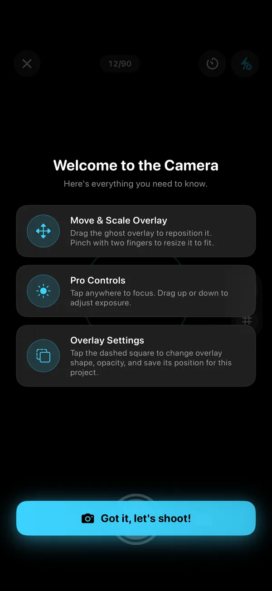
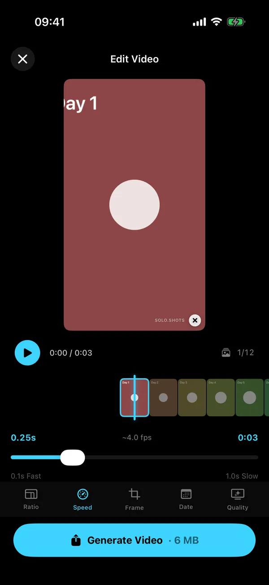

Guide · Pregnancy
Pregnancy bump photos, week by week: a simple plan that lines up
One photo a week, the same spot, the same angle. Forty weeks later you have a video that tells the whole story in seconds. Here's how to set it up so you can do it alone, half-asleep, in under a minute.
Quick answer
Take one side-on photo each week, on the same day, in the same spot, with the phone at the same height and similar clothes. Start whenever you like: a small bump may begin to show around week 13 (NHS), but an early "before" photo is worth having. If you're alone, use a 5- or 10-second timer and line up with last week's photo. After the birth, keep the same spot for your baby's first year.
A photo guide, not medical advice. Every pregnancy looks different, and so does every bump. If anything about your body or your pregnancy worries you, talk to your midwife, doctor or maternity service.
When should I start taking bump photos?
Whenever you like, and earlier is fine. Your first photo is the "before", and you'll be glad to have it even if there's nothing to see yet.
For timing: the NHS says that around week 13 "a small baby bump may now be visible" as the womb grows upwards and outwards. The second trimester runs from week 13 to week 27, and Cleveland Clinic reminds you not to worry if you don't have a bump right away, because it takes time to develop.
Bumps appear at very different times, so compare your photos only with your own first one.
Where should I take my bump photos?
Somewhere you can stand in every week without moving furniture: a plain wall or a door, with window light from the front or the side.
- Mark the floor with a strip of tape for your feet, and mark where the phone goes.
- Phone at bump height on a shelf, a stack of books or a small tripod.
- Use the 1× lens. The 0.5× wide lens stretches whatever is closest to it, and the bump is closest.
- Avoid backlight: standing with your back to a window turns you into a silhouette.
- Same day, same time. Evening light and morning light look like two different people.
What's the best pose for bump photos?
Side-on. A profile shows the bump best and is the easiest pose to repeat.
- Same foot forward, same arms every week: relaxed at your sides or one hand resting under the bump, whichever you'll actually repeat.
- Shoulders relaxed, looking straight ahead (not down at the bump; that changes your posture).
- Same fitted top, or the same bare-bump look. Patterns and loose layers hide the shape.
- Want a front-on photo too? Make it a second project, so each series lines up with itself. In the free version, your first project is free and more unlock after a short ad.
- Letter boards and week cards are fun; keep them in the same place every time.
How do I take bump photos by myself?
Fix the phone in place, use a self-timer and line up with last week's photo. No partner, no arm-stretching, no blurry mirror shots.
- Phone on its mark, at bump height.
- Turn on the Photo Ghost in Solo.Shots so last week's photo shows through the viewfinder.
- Pick a camera: the front camera if you want to watch yourself match the ghost from where you stand; the back camera for the sharpest photo (line up with your floor tape).
- Lock focus and exposure (AE/AF lock) so the brightness doesn't jump between weeks.
- Set the timer to 5 or 10 seconds, step onto your mark and match the ghost.
- Check the level: a small buzz means the phone's tilt matches the photo you're lining up with.


What does a week-by-week bump photo plan look like?
Set it up once, then repeat the same 60 seconds every week. Here's the whole plan:
| When | Do this |
|---|---|
| Before your first photo | Pick the spot, put down tape marks, choose the outfit and the reminder time. |
| Your first photo (any week) | Take it even if there's no bump yet, and note which pregnancy week it is. |
| Weeks 13 to 27 | Same day, same pose. Keep the ghost on Latest: the shape changes fast, so last week is the best match. |
| Week 28 onwards | Set everything up first, then stand only for as long as the timer runs. |
| The last few weeks | Take the week's photo early in the week, in case your baby has other plans. |
| After the birth | One last photo in the same spot (holding your baby, if you like), then start your baby's first year. |
Your weekly 60-second checklist
- Same day, same time, same light.
- Feet on the tape, phone on its mark, 1× lens.
- Ghost of last week's photo on.
- Focus and exposure locked; level matched.
- Same outfit, same arms, side-on.
- Timer on, step in, smile (or don't, but do the same every week).
How do I turn bump photos into a video?
Put the photos in order, line them up and show each for a fraction of a second. In Solo.Shots that's built in: open the project, tap play, choose a format and speed, and generate.
- Format: 9:16 for Reels and Stories, 1:1 square for feeds, 16:9 for the TV.
- Speed: 0.1 to 1 second per photo. Forty photos at 0.25 s make a 10-second video; at 1 s, forty weeks take forty seconds.
- Stamp: Date or Week. Note that "Week N" counts weeks from your first photo, not from the start of pregnancy: if your first photo was at 12 weeks, "Week 1" is your 12-week photo. Use the Date stamp, or mention your starting week in the caption.
- Quality: the free version exports 1080p after a short ad, with a small watermark, and lets you export 4K once (a short ad unlocks it). Premium exports 4K every time with no ads, and you can switch the watermark off.

Can I print my bump photos as a poster for the nursery?
Yes. Solo.Shots makes three kinds of poster from a project: Mosaic (a grid of every photo), Colors (each square becomes that photo's main color) and Timeline (photos as thin vertical slices). Sizes are 1:1 for Instagram, 4:5 for an 8×10 print and 2:3 for a 12×18 print.

What comes after the bump?
The same habit, now with a baby. Start a Baby's First Year project (weekly, with a 52-photo goal) in the same spot, or switch to monthly photos if weekly feels like too much in the newborn fog.
Missed weeks happen. Later on, Solo.Shots can also build a timelapse of your child from photos you've already taken, lined up on the eyes, on your iPhone. The bump-to-baby page puts the whole plan in one place.
FAQ
What day of the week should I take bump photos?
Any day you'll remember. Some people use the day their pregnancy week ticks over. Solo.Shots' weekly reminders arrive on Mondays at the time you choose, so Monday is the easiest if you use the app.
What should I wear in weekly bump photos?
Something you can wear every week that shows the shape: the same fitted top, or the same bare-bump look. Loose layers and bold patterns hide the change you're trying to see.
I missed a week. Is my timelapse ruined?
Not at all. The video just has one frame fewer. Take this week's photo and carry on.
Is Solo.Shots a pregnancy tracker?
No. It doesn't count down to a due date or give medical or baby-development information. It's a camera that helps you keep your weekly photos lined up and turns them into a video. For pregnancy information, use your maternity service or a dedicated pregnancy app.
Who can see my bump photos?
Only you, unless you share them. Solo.Shots has no account and no developer servers. Photos stay on your iPhone and, if you turn on Premium iCloud Backup, in your own private iCloud. The free version shows ads.
Sources
- NHS: 13 weeks pregnant guide (Best Start in Life) (checked 15 Oct 2026)
- Cleveland Clinic: Second Trimester of Pregnancy: What To Expect (last updated 26 Sep 2024; checked 15 Oct 2026)